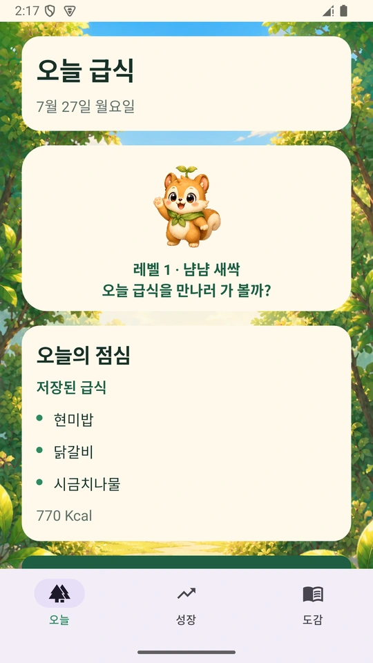

{kind=link}
오늘 급식
우리 학교 메뉴가
한눈에 보여요.
학교를 등록하면 오늘의 급식을 바로 확인할 수 있어요. 낯선 반찬도 미리 만나고, 급식 시간을 가볍게 준비해요.
실제 학교 급식 정보
급식이 없는 날에는 그 이유를 안내해요.
우리 학교 급식을 확인하고, 먹은 만큼 기록해요.
작은 도전이 쌓이면 다람쥐 친구도 함께 자라요.
회원가입 없이, 학교만 선택하면 시작!

매일의 급식을, 즐거운 경험으로
확인하고, 도전하고, 함께 자라는 하루.
실제 앱 화면으로 먼저 만나보세요.
오늘 급식
학교를 등록하면 오늘의 급식을 바로 확인할 수 있어요. 낯선 반찬도 미리 만나고, 급식 시간을 가볍게 준비해요.
급식이 없는 날에는 그 이유를 안내해요.
한 입 도전
다 먹어야만 잘한 건 아니니까요. 한 입 먹어 본 날도, 냄새만 맡아 본 날도 나만의 작은 시도로 남겨요.
알레르기 주의 메뉴는 도전보다 안전 확인이 먼저예요.
나의 성장
한 입의 용기와 매일의 기록이 경험치로 차곡차곡. 다람쥐 친구와 함께 나만의 성장 이야기를 만들어 가요.
성장 화면에서 모은 경험치와 다음 모습을 확인해요.
성장 도감
처음 만난 친구부터 앞으로 만나게 될 모습까지. 성장 도감에서 지금까지의 여정을 한눈에 살펴볼 수 있어요.
기능과 성장 단계는 플랫폼·앱 버전에 따라 달라질 수 있어요.
결과보다, 시도한 마음을 응원해요
낯선 반찬에 다가간 한 걸음.
급식레벨업은 그 작은 용기를 기록해요.
혼내기보다 응원하고, 비교보다 성장을 바라봐요.
알레르기가 의심되는 메뉴는 도전하지 않아도 괜찮아요.
처음이어도 어렵지 않아요
학교 이름을 검색하고
우리 학교를 선택해요.
급식 메뉴와 알레르기
정보를 살펴봐요.
먹은 정도와 한 입의
용기를 솔직하게 남겨요.
쌓여 가는 기록과 함께
다람쥐 친구도 자라나요.
만나는 방법은 세 가지
쓰는 기기에 맞춰 골라 주세요.
버튼을 누르거나 QR을 스캔하면 연결돼요.
앱을 설치하고 오늘 급식부터 만나보세요.
App Store에서 받기내 스마트폰에서 기록을 차곡차곡 쌓아요.
Google Play에서 받기토스 앱이 있다면 미니앱으로 만나보세요.
토스에서 열기토스 미니앱은 토스 앱이 필요해요. 플랫폼별 제공 기능과 업데이트 시점은 다를 수 있어요.
iPhone·Android 앱은 회원가입 없이 시작할 수 있는 무료 앱이에요. 광고나 인앱결제도 없어요. 토스 미니앱을 포함한 플랫폼별 제공 기능과 업데이트 시점은 다를 수 있어요.
학교와 교육청에서 공개한 NEIS 급식식단정보를 사용해요. 방학·재량휴업일이거나 아직 식단이 공개되지 않은 날에는 급식이 표시되지 않을 수 있어요. 자세한 대처 방법은 지원 안내에서 확인해 주세요.
아니요. 알레르기와 관련될 수 있는 메뉴는 한 입 도전보다 학교 안내와 보호자 확인이 먼저예요. 알레르기·영양 정보는 교육용 참고 자료이며, 앱이 알레르기 안전이나 건강 개선을 보장하지는 않아요.
iPhone·Android 앱의 보호자 연결 기능을 이용해요. 아이 기기에서 만든 초대 코드를 부모 모드에 입력하면, 공유하기로 한 기록을 함께 볼 수 있어요. 급식판 사진은 기기 내부에만 저장되고 보호자 공유에 포함되지 않아요.
아래 앱 이용하기에서 토스 버튼을 누르거나 QR을 스캔해 주세요. 토스 앱이 설치된 기기에서 미니앱으로 연결돼요. 설치형 앱과 제공 기능이 다를 수 있어요.
{kind=link}
{kind=link}
{kind=link}